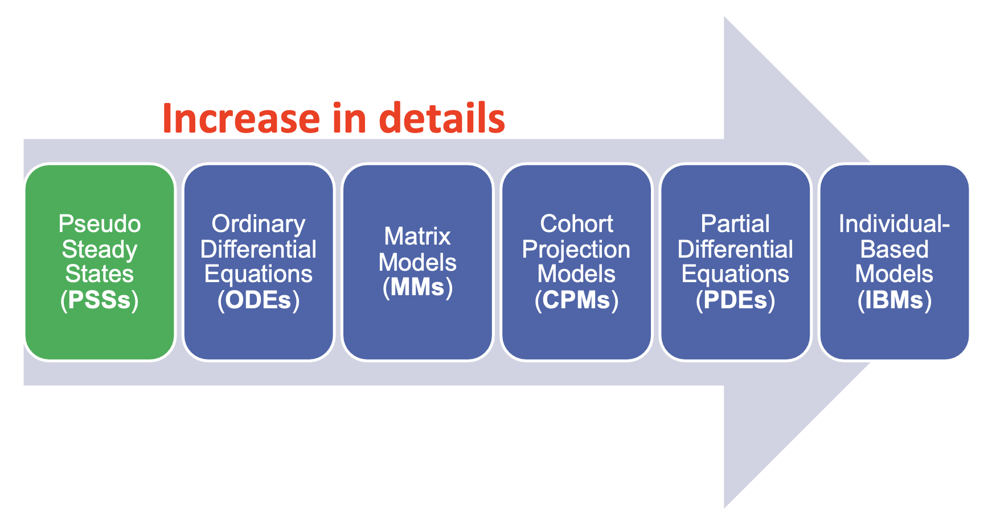
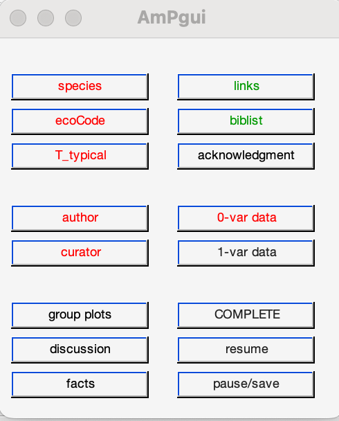

Dynamic Energy Budget - DEB
Table of Contents:
- Dynamic Energy Budget - DEB
- Concept figure
- DEB equations
- Existing models
- Useful web interfaces
- Acquire parameters
- Further DEB modeling - State Variables - ODE In standard DEB model (std) - DEB model can be coupled
Concept figure

DEB equations
basics - reserve dynamics
(refer to graph above, from top to bottom, left to right)
- food ingestion rate
- assimilation flux
- Reserve
- Reserve density
- mobilization flux
allocation of pC
fraction
fraction
-
somatic maintenance
-
energy allocated to growth
-
specific growth rate
OR?
OR?
-
maturity maintenance
-
maturation (embryo-juvenile)
-
reproduction (adult)
MORE DERIVATIONS for equations
Existing models
some of these packages are required to run the scripts in code_pu (or src)
MATLAB tools (original DEB)
DEBtool illustrate some implications of the DEB theory
AmPtool analyses patterns in DEB parameters
install and configuration: Need MATLAB. In MATLAB,
Home>>set pathand direct to the source code
NicheMapR (Habitat modeling)
NicheMapR is written by Michael Kearney. It includes Microclimates, Ectotherms, Endotherms, Plants, Dynamic Energy Budgets modules that can be coupled together to do habitat and behavioral modeling
install and configuration: install package from github tutorial
FABM, FABM-DEB (Hydrodynamic coupling)
FABM-DEB (it is a population model)
FABM couples hydrodynamic models with biogeochemical models. There is a FABM-DEB model constructed by Jorn Bruggeman
installation and configuration
# >>>>>> install and compile FABM-DEB with 0d driver
FABMDIR="~/src/fabm" # Path to FABM source code
GOTMDIR="~/src/GOTM6" # Path to GOTM source code
compiler="/opt/homebrew/bin/gfortran" # fortran compiler on this computer
mkdir -p ~/build/fabm-0d && cd ~/build/fabm-0d
cmake $FABMDIR/src/drivers/0d -DGOTM_BASE=$GOTMDIR -DCMAKE_Fortran_COMPILER=$compiler -DFABM_INSTITUTES="akvaplan;au;bb;csiro;ersem;examples;gotm;iow;jrc;msi;niva;pclake;pml;selma;su;uhh;deb" -DFABM_DEB_BASE=~/src/fabm-deb
make install
# >>>>>> generate yaml files >>>>>>>
https://github.com/fabm-model/fabm/wiki/Setting-up-a-simulation
# >>>>>> run fabm0d coupled with deb >>>>>>>
cd /Users/tongyaop/test_funcs_local/fabm-deb/0d_deb_test
~/local/fabm/0d/bin/fabm0d -y ./fabm-deb.yaml
Or use pydeb:
# >>>>>> run deb in pydeb >>>>>>>
# python packages : NumPy, Python, Jupyter, plotly
# install pydeb:
PYDEB_DIR=~/src/pydeb
python -m pip install $PYDEB_DIR --user
# run a deb model:
# go to $PYDEB_DIR/examples
Population models

IBM (Individual-Based-Model)
installation and configuration
-
Install
NetLogo -
set path in
.bash_profilefor MacOS
cd
vim .bash_profile
export JAVA_HOME=/Library/Internet\ Plug-Ins/JavaAppletPlugin.plugin/Contents/Home
export EBTPATH=/Applications/EBTtool.app/Contents/Resources
export PATH=${JAVA_HOME}/bin:/Applications/NetLogo\ 6.2.0/app:/Applications/EBTtool.app/Contents/MacOs:$PATH
- To run: use
IBM()function in MATLAB (fromDEBtool)
[txNL23W, info] = IBM('Daphnia_magna', [], [], [], [], [], [], 80, 1);
EBT
installation and configuration Need fortran compiler and MATLAB
To run: use EBT() function in MATLAB (from DEBtool).
[txNL23W, info] = EBT('Daphnia_magna', [], [], [], [], [], 80);
CPM
EXPLAIN
Useful web interfaces
-
NicheMapR shiny apps: Online habitat and DEB modeling
-
Debber: Estimates DEB parameters and provide confidence interval ranges.
This could be a documentation for the DEBtool github. Instead of just linking https://bio.vu.nl/thb/deb/deblab/ in the github readme file (That's could be where the frustrating, because you are getting back to where you came from), maybe explain a little bit about how to work with the code.
Acquire parameters
From AmP collection
Even a species exist in the collection, it can be improved
This website should get a top-left figure to click on to go back to the home page
COLLECTION > AmPdata.zip
In MATLAB
- Put
AmPdatato MATLAB path - In MATLAB,
load AmPdata
In R
(copied from NicheMapR tutorial)
install.packages('R.matlab')
library(R.matlab)
allStat <- readMat('allStat.mat') # this will take a few minutes
save(allStat, file = 'allstat.Rda') # save it as an R data file for faster future loading
library(knitr) # this packages has a function for producing formatted tables.
load('allStat.Rda')
allDEB.species<-unlist(labels(allStat$allStat)) # get all the species names
allDEB.species<-allDEB.species[1:(length(allDEB.species)-2)] # last two elements are not species names
kable(head(allDEB.species))
Nspecies <- length(allStat$allStat)
Nspecies
species <- "Eulamprus.quoyii"
species.slot <- which(allDEB.species == species)
par.names <- unlist(labels(allStat$allStat[[species.slot]]))
for(i in 1:length(par.names)){
assign(par.names[i], unlist(allStat$allStat[[species.slot]][i]))
}
Parameter estimation with literature/experimental data
Better-to-have data
| Data to be collected | Common symbol |
|---|---|
| length-weight relationship | |
| length at first feeding (birth) | |
| length at puberty | |
| max mass | |
| max reproduction rate | |
| time from conception to first feeding (birth) | |
| time from first feeding (birth) to puberty | |
| life span | |
| *metamorphasis info | |
| *other types of weight | |
| *growth data from birth to death | |
| *any forms of rate | |
| *reproduction | |
| *temperature dependence |
Better to be under known constant temperature, saturated food conditions (f = 1). This is not a hard requirement.
Start working on all the available data and then reduce the weight of some data if they are uncertain and provides bad estimations
❗ Provide an univariate dataset here in txt/xlsx file form.
parameter estimation preparation
-
Create directory
Taeniopygia_guttata_test -
In MATLAB, change directory to
Taeniopygia_guttata_test, then runAmPepsin the command window. The following window will pop up -
Type in corresponding information:
species Taeniopygia_guttata_test ecoCode climate: Af ecozone: TPi, TA habitat: 0iTh, 0iTi, 0iTs, 0iTg, 0iTa embryo: Tnsf, Tnpf migrate: food: biCi, biHs gender: Dg reprod: O T_typical 42°C Add to
0-var dataValue Reference age at birth 15 d Wiki time since birth at puberty 300 d Wiki life span 4360 d voliere wet weight at birth 0.8 g Wiki ultimate wet weight 11.7 g AnAge maximum reproduction rate 0.0137 Wiki You can also add to
1-var dataAdd the reference list to biblist
Add author (your name)
Add curator (this will not send the information directly)
Add data completeness
If finishes, click
pause/save>quit AmPgui, continue with AmPeps -
AmPepswill then generate four MATLAB scripts. Edit accordinglymydata_*.mincludes observational data you just typed in. You can add to this by typing or using MATLAB functions (e.g.load,readmatrix). Code up corresponding temperature/food if they vary with time.pars_init_*.mdon't need to be edited at this stage.predict_*.mincludes prediction models for observational data. Add in your own model if the auto-generated one is not ideal.run_*.mspecifies estimation options and run the parameter estimation process.
predict model examples can be searched in AmP website > COLLECTION > search for relevant models (e.g. t-L (time-length), T-F(temperature-filtration rate)), click into the species with these models, look at their predict_ file and get inspired
Parameter estimation procedure
Open the run_*.m script, you will see:
close all;
global pets
pets = {'Taeniopygia_guttata'};
check_my_pet(pets);
estim_options('default'); % initialize estimation options
estim_options('max_step_number', 5e2); % maximum
estim_options('max_fun_evals', 5e3);
estim_options('pars_init_method', 2);
estim_options('results_output', 3);
estim_options('method', 'no');
estim_pars;
The parameter estimation procedure compares observational data in mydata_*.m with DEB model described in predict_*.m using parameters defined in pars_init_*.m
The comparison result is evaluated with loss function.
By running run_*.m in MATLAB, this procedure is repeated for many times (until max_step_number), or until the minimum of the loss function is found.
If the minimum of loss function is not found (did not converge), edit pars_init_method to 1 (now reading parameters from previous-procedure-generated results_*.mat); then run run_*.m again in MATLAB until convergence is reached.
In the MATLAB command window, type mat2pars_init. This will rewrite the estimated parameter sets to the pars_init_*.m file.
❗ Make sure to look at the generated .html page, evaluate if the predicted data is physical, and look at if MRE is small. If not, you might want to fix a certain parameter or set less weight to the questionable observational dataset.
To fix a parameter: open pars_init_*.m, change par.** based on your best guess, and set free.** = 0.
To set dataset weight, open mydata_*.m, in the %% set weights for all real data section, change/type weights.** = 0 if you don't want this data to affect parameter estimation, or weights.** = 5 if you feel the dataset is of great importance.
Further DEB modeling
Extract the estimated parameters, and use that in a designated models (e.g. self-coded DEB model, NicheMapR, other coupling modules, population models). Sometimes a full-set of ODE (ordinary differential equation) is needed to simulate the influence of time-varying temperature or food concentration.
State Variables
Variables to be modeled. Typical DEB state variables:
| Variable | Dynamics | |
|---|---|---|
| Reserve | ||
| Structure | ||
| Maturity | ||
| Reproduction |
Where
ODE In standard DEB model (std)
The ODEs are constructed by the dynamic equations above. Here is one coding example. This pieces of code generates 4-vector with state variabels ELHR, correspond to time t
GIVE A CODING EXAMPLE, Maybe AmPtools/trajectory/>std model
DEB model can be coupled
DEB has the potential to be coupled with physical environmental models, population dynamic models, ecological models etc.